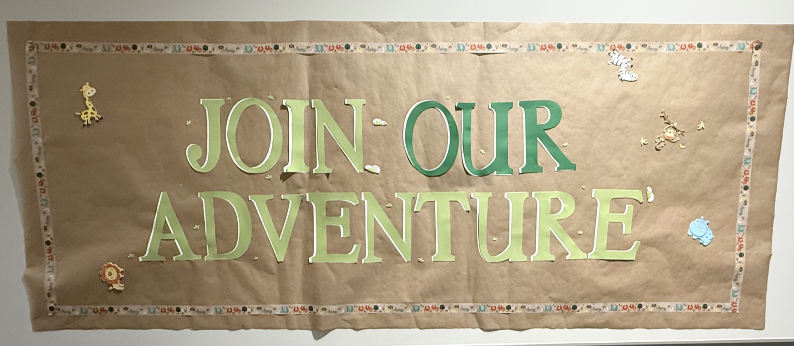
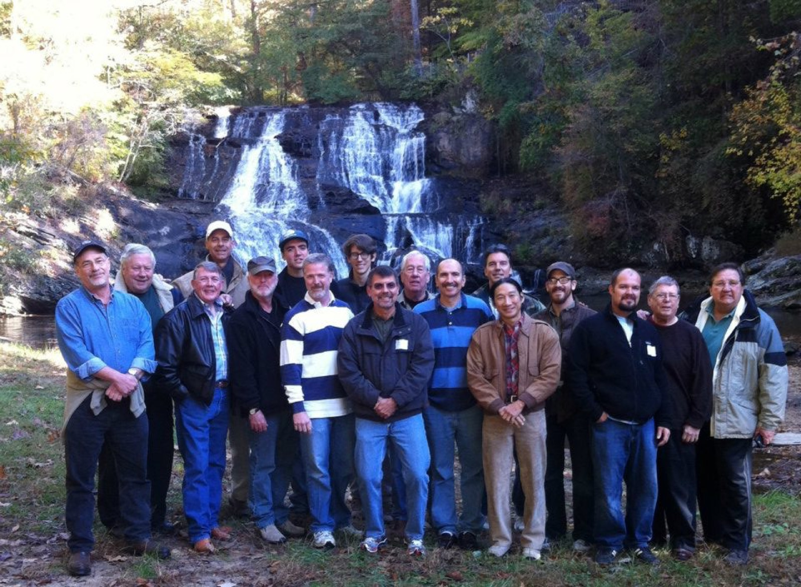
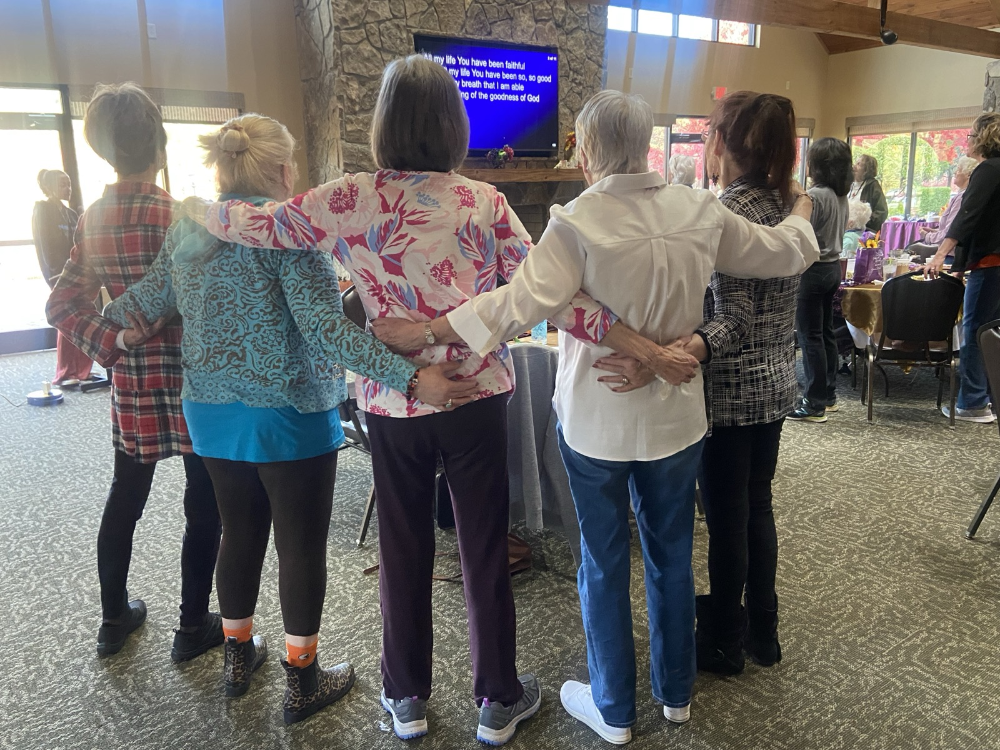
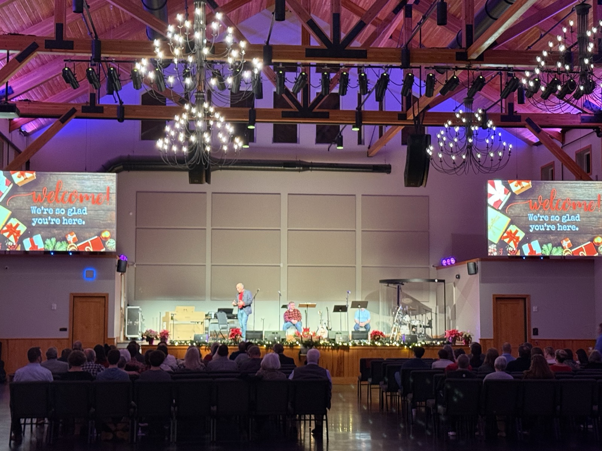
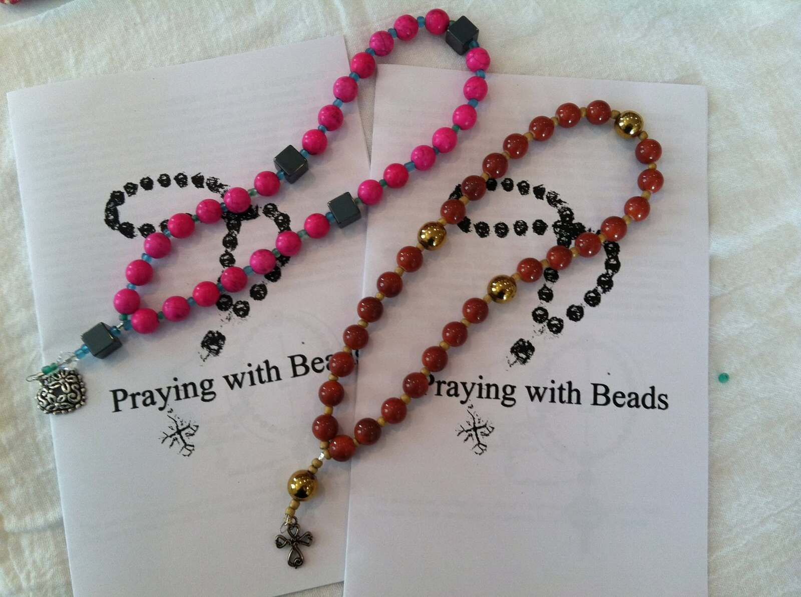

Children's Ministry
Ebenezer's Children's Ministry is a Christ-centered, family-focused ministry dedicated to introducing kids to Jesus and helping them grow through biblical teaching, discipleship, and age-appropriate faith activities. We strive to provide a safe, nurturing, and engaging environment where kids can experience God's love and build a strong spiritual foundation.
"Whoever welcomes one such child in my name welcomes me." — Mark 9:37
RISE Youth
RISE Youth is a vibrant ministry for students in grades 6–12. Our mission is to help students grow in faith, community, and purpose. Each week includes engaging games, powerful worship, and a relevant message from our youth minister, Asa Sellers, followed by meaningful devotional time in small groups. RISE provides a welcoming environment where teens can connect, be encouraged, and take the next step in their walk with Christ.

Men's Ministry
We are dedicated to helping men grow in Christ, build authentic relationships, and live out their God-given calling through Bible study, fellowship, and discipleship. Whether you're looking for accountability, spiritual growth, or a community of Christian men walking through life together, you'll find a welcoming brotherhood here. We aim to equip men to live with integrity, purpose, and courage as they follow Jesus daily.

Women's Ministry
Life is complicated, especially for women pulled in many directions. Ebenezer's Women's Ministry is a community of women growing together in faith, friendship, and service. Whether you're seeking connection, spiritual growth, or a place to belong — you're welcome here.
Grow — Bible studies, retreats, speakers on real-life topics
Serve — Prayer blankets, outreach projects, supporting families in need
Music Ministry
Our Music Ministry is a lighthearted, friendly community where we grow in faith and enjoy serving together. With a dynamic church choir, a developing orchestra, and a vibrant contemporary praise band, we offer meaningful opportunities for singers and instrumentalists to use their gifts in worship. Whether you're an experienced musician or just beginning, you'll find encouragement, friendship, and a joyful place to serve.


Prayer Ministry
Ebenezer has an active prayer ministry that meets at 9 a.m. Mondays to pray corporately for our individual needs and those of church members and friends. A secure WhatsApp group is available for posting urgent needs. No prayer concern is too small; we believe in the power of prayer. God has led many people in crisis to our Monday morning gathering — an opportunity we cherish.
You Are Not Alone
You Are Not Alone is a compassionate support group for anyone experiencing grief or loss. Participants gather monthly to share, listen, and receive support in a safe, understanding, and confidential environment. We care about all your losses — whether it's job loss, the loss of a precious pet, the death of a loved one, or the loss of the life you expected to lead — and we walk with you through every step.

Continuing With Joy
Continuing With Joy offers support and encouragement to widows in a faith-based, loving, and caring ministry. The women gather monthly for food, fun, and fellowship, with a festive holiday gathering each Christmas. Between meetings, the women pray for and support each other in many ways. The name truly personifies what the ministry is all about: a group that, with the Lord's help, exemplifies what it means to continue with joy.